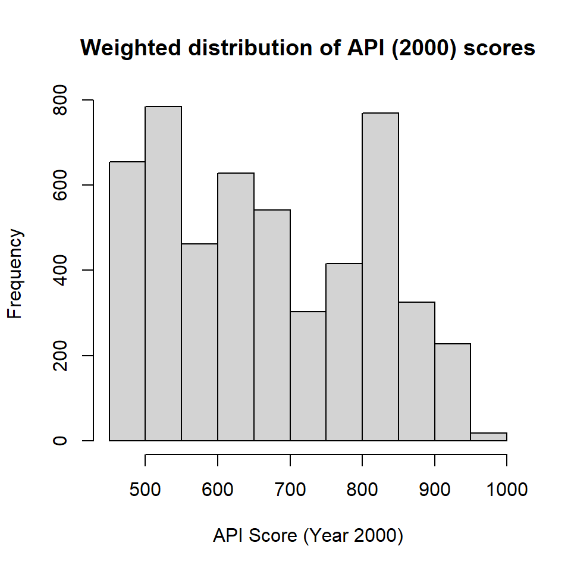
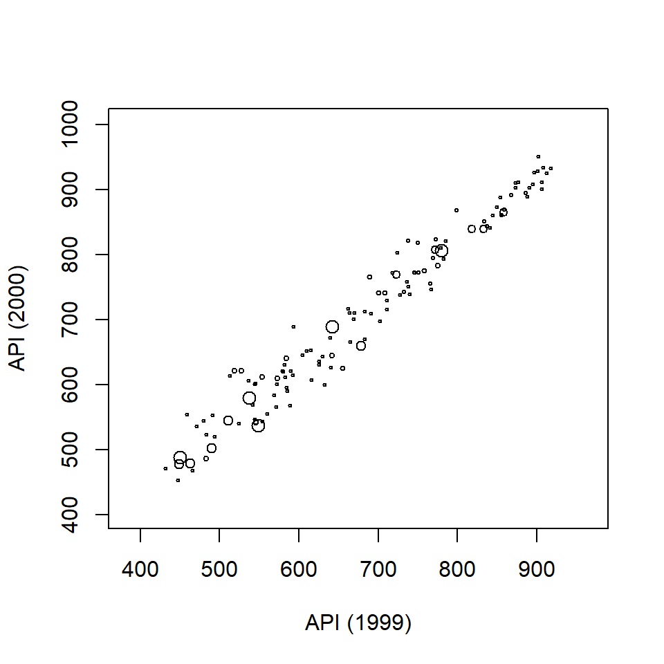
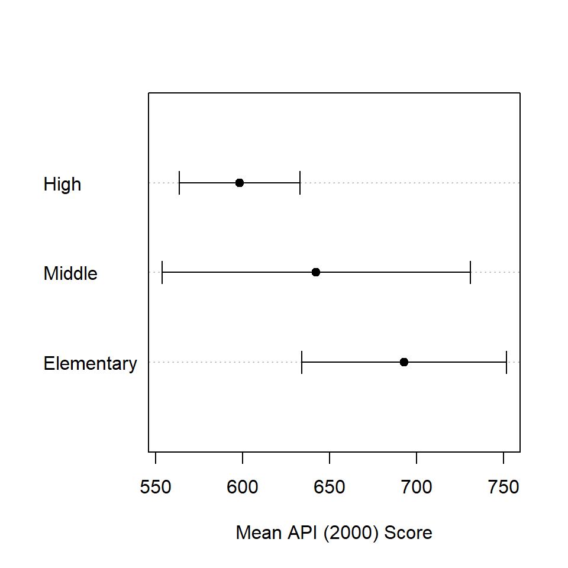
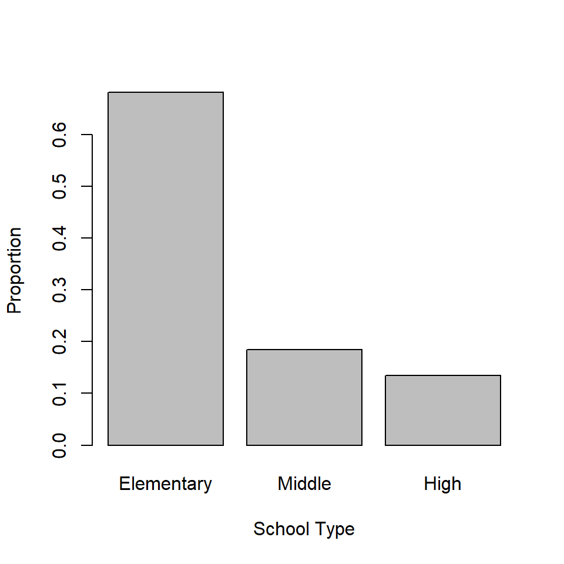
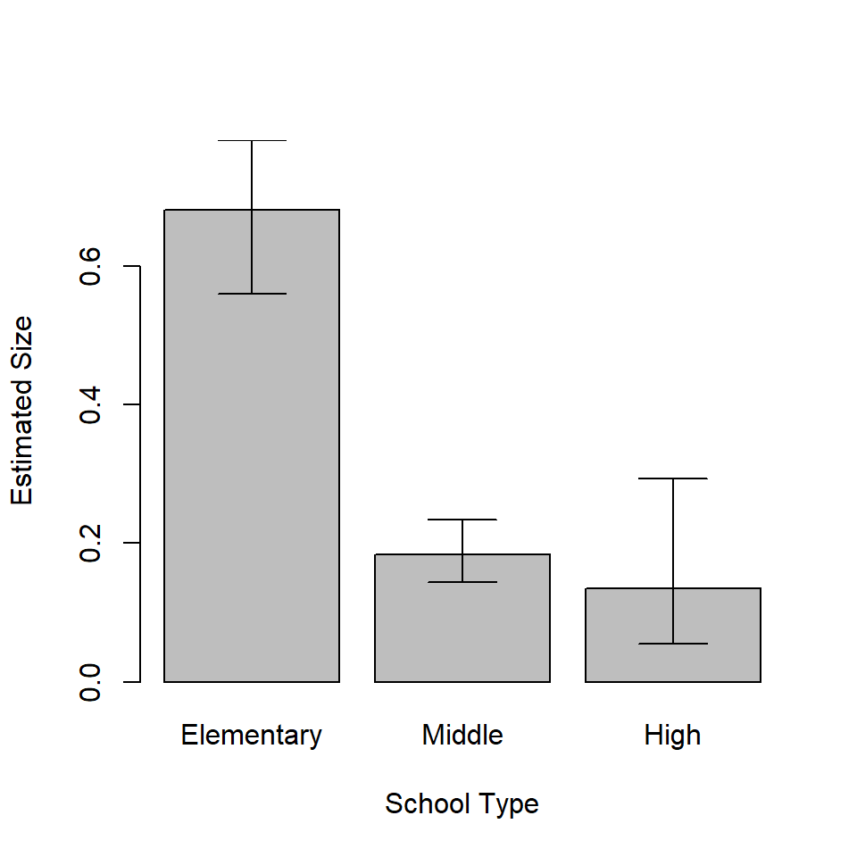
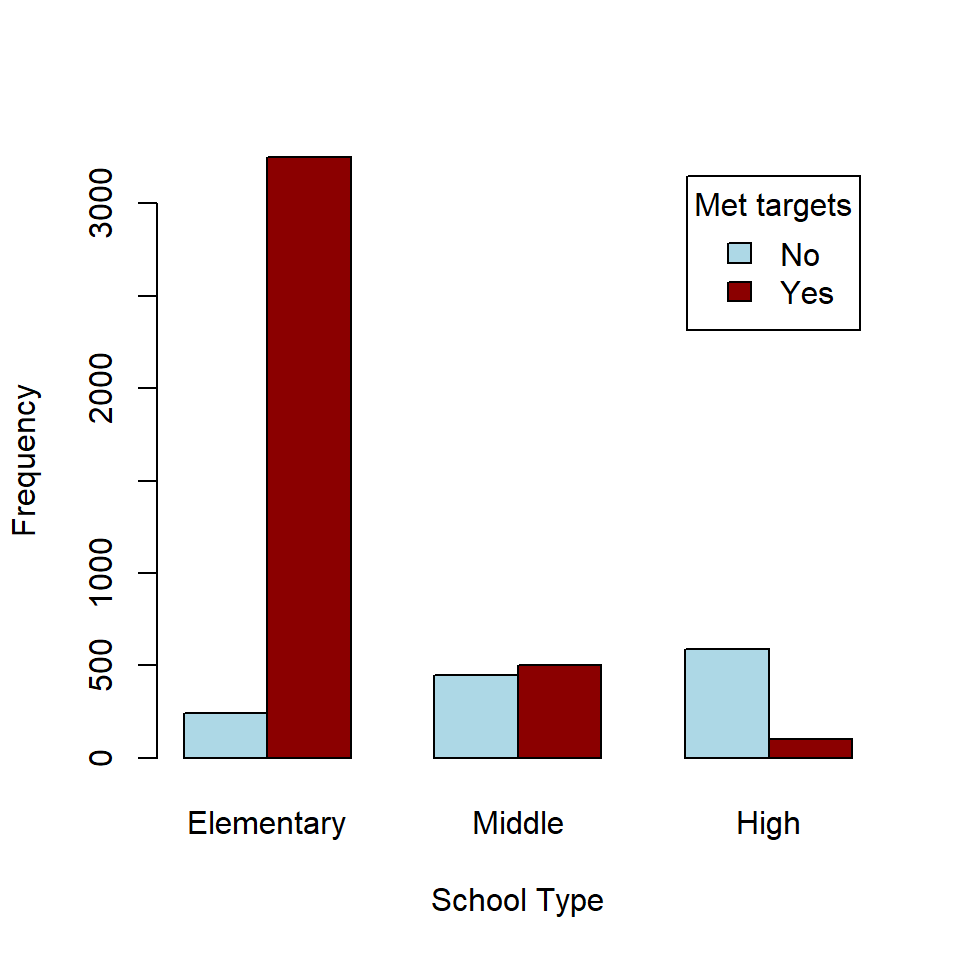
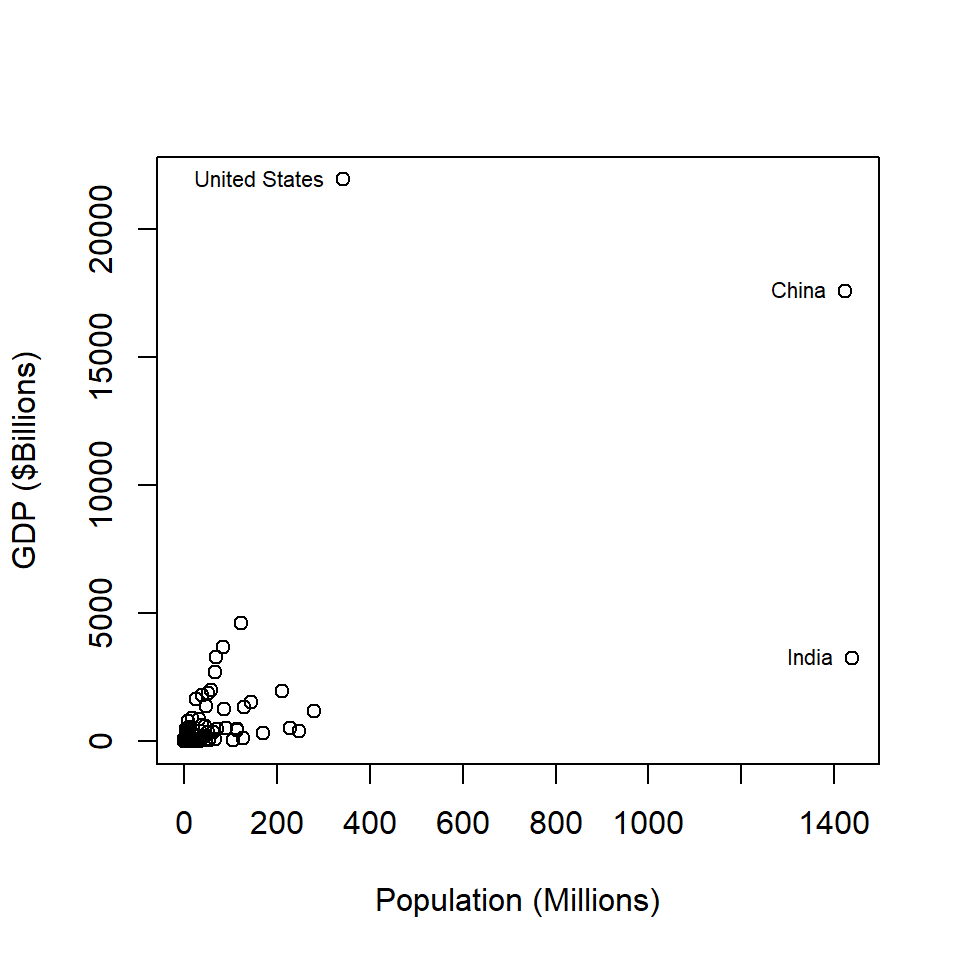
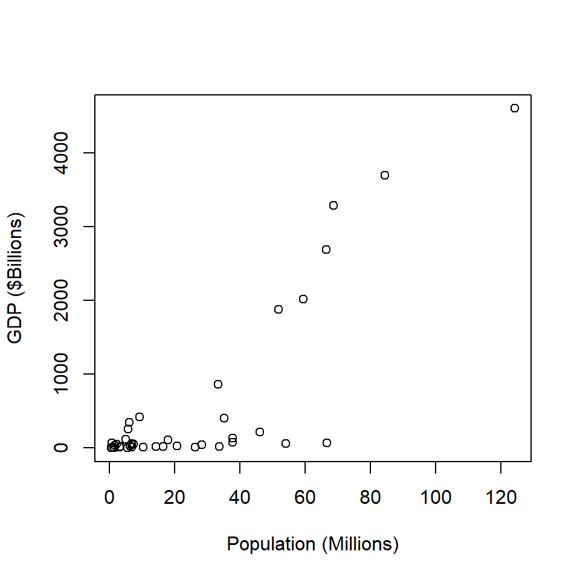
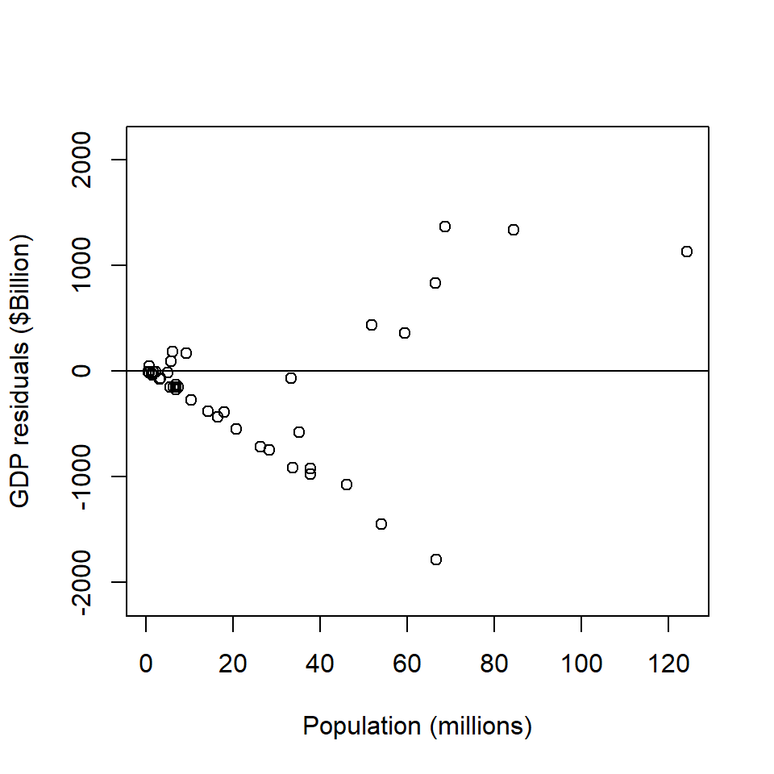

7 Survey Analysis
\(\DeclareMathOperator*{\argmin}{argmin}\) \(\newcommand{\var}{\mathrm{Var}}\) \(\newcommand{\bfa}[2]{{\rm\bf #1}[#2]}\) \(\newcommand{\rma}[2]{{\rm #1}[#2]}\) \(\newcommand{\estm}{\widehat}\)
With the ability to load a survey dataset and specify its survey design we’re now ready to do some analysis.
We’ll use the api dataset which comes with the survey package: it’s a
set of observations of the Academic Performance Index (API) on all
California Schools with at least 100 students in the years 1999 and 2000.
In particular we’ll use the apiclus2 dataset, which is a two stage
cluster sample of 126 schools drawn from the population of 6194.
The top 10 rows of the data set and some of the key variables are shown below.
apiclus2$stype <- factor(apiclus2$stype, levels=c("E","M","H"))
levels(apiclus2$stype) <- c("Elementary","Middle","High")
apiclus2 |>
slice_head(n=10) |>
select(cds, stype, name, dnum, cnum, api99, api00) |>
kbl() |>
kable_styling()| cds | stype | name | dnum | cnum | api99 | api00 |
|---|---|---|---|---|---|---|
| 31667796031017 | Elementary | Alta-Dutch Flat | 15 | 30 | 785 | 821 |
| 55751846054837 | Elementary | Tenaya Elementa | 63 | 54 | 718 | 773 |
| 41688746043517 | Elementary | Panorama Elemen | 83 | 40 | 632 | 600 |
| 41688746043509 | Middle | Lipman Middle | 83 | 40 | 740 | 740 |
| 41688746043491 | Elementary | Brisbane Elemen | 83 | 40 | 711 | 716 |
| 40687266042998 | Elementary | Cayucos Element | 117 | 39 | 779 | 811 |
| 20651936023881 | Elementary | Fuller (Merle L | 132 | 19 | 432 | 472 |
| 20651936023931 | Elementary | Fairmead Elemen | 132 | 19 | 494 | 520 |
| 20651936023907 | Middle | Wilson Elementa | 132 | 19 | 589 | 568 |
| 06615980631259 | High | Colusa High | 152 | 5 | 585 | 591 |
| Variable | Description |
|---|---|
| cds | Unique identifier |
| stype | Elementary/Middle/High School |
| name | School name (15 characters) |
| sname | School name (40 characters) |
| snum | School number |
| dname | District name |
| dnum | District number |
| cname | County name |
| cnum | County number |
| flag | reason for missing data |
| pcttest | percentage of students tested |
| api00 | API in 2000 |
| api99 | API in 1999 |
| target | target for change in API |
| growth | Change in API |
| sch.wide | Met school-wide growth target? |
| comp.imp | Met Comparable Improvement target |
| both | Met both targets |
| awards | Eligible for awards program |
| meals | Percentage of students eligible for subsidized meals |
| ell | ‘English Language Learners’ (percent) |
| yr.rnd | Year-round school |
| mobility | percentage of students for whom this is the first year at the school |
| acs.k3 | average class size years K-3 |
| acs.46 | average class size years 4-6 |
| acs.core | Number of core academic courses |
| pct.resp | percent where parental education level is known |
| not.hsg | percent parents not high-school graduates |
| hsg | percent parents who are high-school graduates |
| some.col | percent parents with some college |
| col.grad | percent parents with college degree |
| grad.sch | percent parents with postgraduate education |
| avg.ed | average parental education level |
| full | percent fully qualified teachers |
| emer | percent teachers with emergency qualifications |
| enroll | number of students enrolled |
| api.stu | number of students tested. |
The apiclus2 dataset was drawn by taking a sample of districts (labelled by district number dnum),
and then a sample of schools within districts (schools are labelled by their school number snum).
The column fpc1 contains the number of districts (757), and the column fpc2 contains the
number of schools in each district (which varies by district).
We can specify this two stage cluster design using
The summary() function tells us the basics of the design we’ve just specified:
## 2 - level Cluster Sampling design
## With (40, 126) clusters.
## svydesign(ids = ~dnum + snum, fpc = ~fpc1 + fpc2, data = apiclus2)
## Probabilities:
## Min. 1st Qu. Median Mean 3rd Qu. Max.
## 0.003669 0.037743 0.052840 0.042390 0.052840 0.052840
## Population size (PSUs): 757
## Data variables:
## [1] "cds" "stype" "name" "sname" "snum" "dname"
## [7] "dnum" "cname" "cnum" "flag" "pcttest" "api00"
## [13] "api99" "target" "growth" "sch.wide" "comp.imp" "both"
## [19] "awards" "meals" "ell" "yr.rnd" "mobility" "acs.k3"
## [25] "acs.46" "acs.core" "pct.resp" "not.hsg" "hsg" "some.col"
## [31] "col.grad" "grad.sch" "avg.ed" "full" "emer" "enroll"
## [37] "api.stu" "pw" "fpc1" "fpc2"We can see that from the summary that \(n=40\) districts were sampled (out of \(N=757\)). Let’s count the number of schools sampled per district. We’ll just display the top 15 largest districts:
apiclus2 |>
group_by(dnum,dname) |>
summarise(Mi=first(fpc2),mi=n()) |>
ungroup() |>
arrange(desc(Mi)) |>
slice_head(n=15) |>
kbl(col.names=c("dnum","District Name","$M_i$","$m_i$"),escape=FALSE) |>
kable_styling(full_width=FALSE)| dnum | District Name | \(M_i\) | \(m_i\) |
|---|---|---|---|
| 620 | Sacramento City Unified | 72 | 5 |
| 570 | Pomona Unified | 36 | 5 |
| 575 | Poway Unified | 28 | 5 |
| 638 | San Lorenzo Unified | 14 | 5 |
| 200 | El Centro Elementary | 11 | 5 |
| 731 | Sylvan Union Elementary | 9 | 5 |
| 596 | Rincon Valley Union Elem | 7 | 5 |
| 639 | San Lorenzo Valley Unif | 7 | 5 |
| 781 | Walnut Creek Elementary | 6 | 5 |
| 295 | Healdsburg Unified | 5 | 5 |
| 403 | Los Gatos Union Elem | 5 | 5 |
| 480 | Natomas Unified | 5 | 5 |
| 534 | Palo Verde Unified | 5 | 5 |
| 549 | Piedmont City Unified | 5 | 5 |
| 173 | Del Mar Union Elementary | 4 | 4 |
After the 10 largest districts a census of schools is taken in each selected district \(m_i=M_i\)
7.1 Continous variables
Consider the key outcome variable `api00``, the API score in the year 2000 for each school.
Display
The basic workhorse for the display of numerical variables is the histogram
svyhist(~api00, design=apiclus2.des, prob=FALSE,
xlab="API Score (Year 2000)",
main="Weighted distribution of API (2000) scores")
Figure 7.1: Weighted histogram of API (2000) scores
Note that this histogram differs strongly from the simple histogram of the sample values:
hist(apiclus2$api00,
xlab="API Score (Year 2000)",
main="Unweighted distribution of API (2000) scores")
Figure 7.2: Unweighted histogram of API (2000) sample data
a warning to us that with survey data we can go badly astray if we ignore the sample design.
Boxplots are an alternative to histograms:

Figure 7.3: Distribution of API (2000) sample data
… especially if we want to display variables divided by a category:
svyboxplot(api00~stype, design=apiclus2.des,
xlab="School Type",
ylab="API (2000)", main="API (2000) Scores")
Figure 7.4: Distribution of API (2000) sample data
If we have two continuous variables we can plot them as a scatterplot, showing the weights of each observation:

Figure 7.5: Distribution of API scores in 1999 and 2000
Estimation
We’ve already seen that we can estimate means using the svymean() function.
## mean SE
## api00 670.81 30.099The jtools package allows us to estimate the population standard deviation too
## std. dev.
## api00 136.83(Pause a minute and remind yourself of the difference between a standard deviation and a standard error.)
We can estimates means for a set of separate variables, using a perhaps uninintuitive notation:
## mean SE
## api99 645.03 29.711
## api00 670.81 30.099or for a variable split by categories by wrapping svymean() up inside a call to svyby()
## stype api00 se
## Elementary Elementary 692.8104 29.92660
## Middle Middle 642.3520 45.09132
## High High 598.3407 17.69417A dotchart is a nice way of showing the estimated means and their confidence intervals:
ss <- svyby(~api00, by=~stype, svymean, design=apiclus2.des)
sc <- confint(ss)
ns <- nrow(sc)
dotchart(ss, xlim=range(sc), xlab="Mean API (2000) Score")
arrows(sc[,1], 1:ns, sc[,2], 1:ns, angle=90, code=3, length=0.1)
Figure 7.6: Mean API (2000) scores by School Type
If we want to test statistical hypotheses about differences between groups one way is to use the regression framework
##
## Call:
## svyglm(formula = api00 ~ stype, design = apiclus2.des)
##
## Survey design:
## svydesign(ids = ~dnum + snum, fpc = ~fpc1 + fpc2, data = apiclus2)
##
## Coefficients:
## Estimate Std. Error t value Pr(>|t|)
## (Intercept) 692.81 29.93 23.150 < 2e-16 ***
## stypeMiddle -50.46 25.30 -1.994 0.05354 .
## stypeHigh -94.47 28.21 -3.348 0.00188 **
## ---
## Signif. codes: 0 '***' 0.001 '**' 0.01 '*' 0.05 '.' 0.1 ' ' 1
##
## (Dispersion parameter for gaussian family taken to be 17528.44)
##
## Number of Fisher Scoring iterations: 2Here we can see that with Elementary as the reference level we
get the same estimate of the mean API reported as the (Intercept).
We further see that there is no significant difference between Middle
and Elementary Schools in mean API, but the mean API is significantly lower
at High Schools compared to Elementary Schools.
Regressions take of course take lots of variables into account, and we can apply familiar regression techniques to investigating conditional associations between predictors and a continuous outcome.
For example we can test whether the percentage of children at a school
who have free school meals (i.e. the meals variable) associates with the
API score:
##
## Call:
## svyglm(formula = api00 ~ stype + meals, design = apiclus2.des)
##
## Survey design:
## svydesign(ids = ~dnum + snum, fpc = ~fpc1 + fpc2, data = apiclus2)
##
## Coefficients:
## Estimate Std. Error t value Pr(>|t|)
## (Intercept) 874.8638 16.4677 53.126 < 2e-16 ***
## stypeMiddle -60.9517 20.6964 -2.945 0.00563 **
## stypeHigh -169.2128 20.2618 -8.351 6.06e-10 ***
## meals -3.2367 0.2888 -11.209 2.70e-13 ***
## ---
## Signif. codes: 0 '***' 0.001 '**' 0.01 '*' 0.05 '.' 0.1 ' ' 1
##
## (Dispersion parameter for gaussian family taken to be 5560.106)
##
## Number of Fisher Scoring iterations: 2… and there is indeed a strong negative association: the higher the
meals value the lower the API score.
We can estimate totals using the svytotal() function - for example
we can estimate the total number of students enrolled at all schools in
California:
## total SE
## enroll 2639273 799638Although note that we have had to remove some schools with unknown
enroll values by stating na.rm=TRUE, and these forced removals likely mean
that our estimate of the total is an underestimate.
Confidence intervals can be calculated using the confint() function
## 2.5 % 97.5 %
## api99 586.8009 703.2670
## api00 611.8188 729.8048## 2.5 % 97.5 %
## Elementary 634.1553 751.4655
## Middle 553.9746 730.7294
## High 563.6607 633.0206The standard errors can be directly extracted using SE()
## [1] 29.92660 45.09132 17.694177.1.1 Relative Sampling Errors (RSEs)
The relative standard errors, also known as relative sampling errors
(RSEs) can be extracted by cv():
## Elementary Middle High
## 0.04319595 0.07019721 0.02957206RSEs are a useful measure of quality of estimates of quantities that are strictly positive, such as the API score.
If we learned that the SE of an estimate (e.g. the mean of api00) was
30.1 we wouldn’t be able to assess whether it
was a good estimate or not without knowing that the value of the estimate
was 670.81. A good way to assess the quality of
an estimate is the SE of an estimate \(\widehat{T}\) as a proportion of
the estimate \(\widehat{T}\):
\[
\bfa{RSE}{\widehat{T}} = \frac{\bfa{SE}{\widehat{T}}}{\widehat{T}}
\]
For overall mean api00 the RSE is
\[
\bfa{RSE}{\widehat{\bar{Y}}}
= \frac{30.1}{670.81}
= 0.045
\]
This is a highly precise estimate: the SE is only 4.5%
of the value of the estimate.
Good RSEs are only a few percent at most. Poor RSEs are larger than 10%, and anything bigger than 20% isn’t really publishable.
In general a standard deviation divided by a mean goes by the term
coefficient of variation (CV), which is why the R function is
called cv().
## api00
## api00 0.044869567.2 Categorical Variables
The workhorse display for categorical variables is the barplot,
showing proportions in categories. Proportions are first calculated
using the svymean() function:
barplot(svymean(~stype, design=apiclus2.des),
names=levels(apiclus2$stype),
xlab="School Type", ylab="Proportion")
Figure 7.7: Estimates of the proportions of Schools of each type
## mean SE
## stypeElementary 0.68118 0.0556
## stypeMiddle 0.18450 0.0222
## stypeHigh 0.13432 0.0567It’s worth pausing to recognise that a proportion is a mean of a special type of variable called an indicator variable: it takes the value 1 if the observation is a member of specific category and 0 if not. Add up all the ones and zeroes and you get the number of observations in the category, and divide by the number of observations you get a proportion. \[ p = \frac{1 + 0 + 1 + 1 + 0 + 0 + ....}{n} = \frac{1}{n}\sum_{i=1}^n Y_i \] where \(Y_i\) is an indicator variable.
With sample data we calculate weighted sums though: \[ \widehat{p} = \frac{\sum_{i=1}^n w_i Y_i}{\sum_{i=1}^n w_i} = \frac{\widehat{Y}}{\widehat{N}} \] where the top line of this fraction is \(\widehat{Y}\), our estimate of the number of individuals (in a finite population) who belong to the category of interest. The bottom line is \(\widehat{N}\), the estimated size of the population. \(\widehat{N}\) is exact in some designs (e.g. SRSWOR, or Stratified SRSWOR), but is approximate in other designs (especially cluster designs).
These total estimates within categories can be estimated using the svytotal()
function.
## total SE
## stypeElementary 3493.56 1119.75
## stypeMiddle 946.25 311.81
## stypeHigh 688.87 289.35When creating barplots of estimated proportions and/or totals
we really should indicate the uncertainties in our
estimates, and show confidence intervals on the bars. We can use the standard
errors provided by svymean() and svytotal(): the function confint()
will provide these:
## 2.5 % 97.5 %
## stypeElementary 1298.8892 5688.221
## stypeMiddle 335.1077 1557.392
## stypeHigh 121.7472 1255.993These confidence intervals are symmetric about the point estimates:
ss <- svymean(~stype, design=apiclus2.des)
ci <- confint(ss)
bp <- barplot(ss, xlab="School Type", ylab="Estimated Size",
names=levels(apiclus2$stype),
ylim=c(0,max(ci)))
arrows(bp, ci[,1], bp, ci[,2], angle=90, length=0.2, code=3)Figure 7.8: Estimated proportions of schools by school type - with symmetric confidence intervals
names(ss) <- levels(apiclus2$stype)
cbind(as.numeric(ss),ci) |>
kbl(col.names=c("Estimate","2.5%","97.5%"),
digits=3,
caption="Symmetric confidence interval estimates") |>
kable_styling(full_width=FALSE)| Estimate | 2.5% | 97.5% | |
|---|---|---|---|
| stypeElementary | 0.681 | 0.572 | 0.790 |
| stypeMiddle | 0.185 | 0.141 | 0.228 |
| stypeHigh | 0.134 | 0.023 | 0.246 |
These symmetric intervals are actually somewhat unrealistic, because
confint() doesn’t know it’s dealing with indicator variables, and
doesn’t take into account the fact that proportions and totals can’t go
negative.
A better method of constructing confidence intervals is the special
function svyciprop():
## 2.5% 97.5%
## I(stype == "Elementary") 0.681 0.560 0.782Note that we’ve had to create an indicator variable here using the I()
function for just one level in order to calculate its confidence interval.
To get a confidence interval proportion for every level of a factor
it’s somewhat fiddly with the raw survey package:
ss <- svymean(~stype, design=apiclus2.des)
ci <- t(sapply(levels(apiclus2$stype),
function(stypelevel) {
form <- eval(parse(text=paste0("formula(~I(stype==\"",stypelevel,"\"))")))
confint(svyciprop(form, design=apiclus2.des))
}))
bp <- barplot(ss, xlab="School Type", ylab="Estimated Size",
names=levels(apiclus2$stype),
ylim=c(0,max(ci)))
arrows(bp, ci[,1], bp, ci[,2], angle=90, length=0.2, code=3)
Figure 7.9: Estimated proportions of schools by school type - with asymmetric confidence intervals
names(ss) <- levels(apiclus2$stype)
cbind(as.numeric(ss),ci) |>
kbl(col.names=c("Estimate","2.5%","97.5%"),
digits=3,
caption="Asymmetric confidence interval estimates") |>
kable_styling(full_width=FALSE)| Estimate | 2.5% | 97.5% | |
|---|---|---|---|
| Elementary | 0.681 | 0.560 | 0.782 |
| Middle | 0.185 | 0.144 | 0.234 |
| High | 0.134 | 0.055 | 0.294 |
The biggest thing to notice is that the confidence interval for “High” is now asymmetric: it’s longer on the high side that the low side, and more correctly represents our uncertainty. The estimates for “Elementary” and “Middle” are essentially unchanged.
For crosstabulations we can use svytable(), which gives weighted
counts in categories - e.g. of whether School Wide growth targest had been met
## sch.wide
## stype No Yes
## Elementary 242.240 3251.315
## Middle 446.630 499.620
## High 586.675 102.195Which can be displayed with a side-by-side barplot
st <- svytable(~sch.wide+stype, design=apiclus2.des)
bp <- barplot(st, beside=TRUE, col=c("light blue","dark red"),
legend=TRUE, args.legend=list(title="Met targets"),
xlab="School Type", ylab="Frequency")
Figure 7.10: Counts of schools meeting targets, by school type
A test of association is given by the weighted Chi-Square test
##
## Pearson's X^2: Rao & Scott adjustment
##
## data: svychisq(~stype + sch.wide, design = apiclus2.des)
## F = 11.873, ndf = 1.3825, ddf = 53.9175, p-value = 0.0003221We can carry out a logistic regression to make a similar test of association.
We have sch.wide as the binary outcome variable and stype as the predictor:
##
## Call:
## svyglm(formula = I(sch.wide == "Yes") ~ stype, design = apiclus2.des,
## family = quasibinomial(link = "logit"))
##
## Survey design:
## svydesign(ids = ~dnum + snum, fpc = ~fpc1 + fpc2, data = apiclus2)
##
## Coefficients:
## Estimate Std. Error t value Pr(>|t|)
## (Intercept) 2.5969 0.5997 4.331 0.000109 ***
## stypeMiddle -2.4848 1.1565 -2.148 0.038292 *
## stypeHigh -4.3445 0.8757 -4.961 1.59e-05 ***
## ---
## Signif. codes: 0 '***' 0.001 '**' 0.01 '*' 0.05 '.' 0.1 ' ' 1
##
## (Dispersion parameter for quasibinomial family taken to be 1.008)
##
## Number of Fisher Scoring iterations: 5With regular lm() and glm() regression fits we can use F tests to determine
whether specific terms in the model should be included. A similar test
can be done to test for the inclusion of specific terms using regTermTest
sr <- svyglm(I(sch.wide=="Yes")~stype, family=quasibinomial(link="logit"),
design=apiclus2.des)
regTermTest(sr, ~stype)## Wald test for stype
## in svyglm(formula = I(sch.wide == "Yes") ~ stype, design = apiclus2.des,
## family = quasibinomial(link = "logit"))
## F = 13.61363 on 2 and 37 df: p= 3.7061e-05Here we can see that stype is contributing significantly to the fit of the model.
7.3 Ratio estimation
There often arise circumstances in survey analysis where we can expect one variable to be proportional to another: for example population and GDP are likely to move together.

Figure 7.11: Population and GDP (2023) (Source: Our World in Data)
The are three clear outliers here are the US, China and India.
We have full data on \(N=150\) countries, and the total GDP of the world in 2023 was \(Y=9.1046\times 10^{4}\) in billions of US dollars.
Let’s imagine though that we only had a sample of \(n=40\) countries out of the \(N=150\) and wanted to estimate the total GDP \(Y\). The first 10 rows of our sample are shown below.
| Country | Population | GDP | bigN | weight |
|---|---|---|---|---|
| Zambia | 20.723967 | 27.580696 | 150 | 3.75 |
| Saudi Arabia | 33.264289 | 863.963569 | 150 | 3.75 |
| Mauritius | 1.273591 | 14.170188 | 150 | 3.75 |
| Bahrain | 1.569674 | 39.966811 | 150 | 3.75 |
| Benin | 14.111035 | 17.831007 | 150 | 3.75 |
| Myanmar | 54.133800 | 63.756974 | 150 | 3.75 |
| Mozambique | 33.635163 | 20.532020 | 150 | 3.75 |
| Bosnia and Herzegovina | 3.185072 | 20.681711 | 150 | 3.75 |
| Montenegro | 0.633553 | 5.161591 | 150 | 3.75 |
| Japan | 124.370947 | 4601.203386 | 150 | 3.75 |

Figure 7.12: Sample of 40 countries: Population and GDP (2023) (Source: Our World in Data)
Our sample happens to miss out on all three of the big countries here. Note that there are some mid-size countries with low GDP visible in the plot, so that the relationship between population and GDP isn’t simple.
Our design specification is:
and our total GDP estimate is
## total SE
## GDP 81890 22980This estimate has a very high SE due to the high variability among countries in GDP, and leads to a very wide confidence interval
## 2.5 % 97.5 %
## GDP 36850.06 126930.8with a very high RSE
## GDP
## GDP 0.2806213indicating an estimate of low quality.
We could use the correlation between population \(x_i\) and GDP \(y_i\) and fit a standard regression model \[ y_i = \beta x_i + \varepsilon_i\qquad \varepsilon_i\sim N(0,\sigma^2) \] omitting the intercept since we want GDP to be proportional to population.
##
## Call:
## svyglm(formula = GDP ~ -1 + Population, design = gdp.sample.des)
##
## Survey design:
## svydesign(id = ~1, fpc = ~bigN, data = gdp.sample)
##
## Coefficients:
## Estimate Std. Error t value Pr(>|t|)
## Population 27.870 4.117 6.77 4.44e-08 ***
## ---
## Signif. codes: 0 '***' 0.001 '**' 0.01 '*' 0.05 '.' 0.1 ' ' 1
##
## (Dispersion parameter for gaussian family taken to be 423229.9)
##
## Number of Fisher Scoring iterations: 2The coefficient \(\beta\) is the GDP ($Billions) per million people in the population. A 95% confidence interval for \(\beta\) is
## 2.5 % 97.5 %
## Population 19.54262 36.19642It does have a better RSE than our earlier estimate
## Population
## 0.1477149Scaling the estimated GDP per million by the total population of the world (\(X=7646.716928\) million) we still get a rather wide confidence interval
## 2.5 % 97.5 %
## Population 149436.9 276783.8The reason we’re still not doing very well is that the regression model isn’t a good representation of the situation. Take a look at the residual plot:

Figure 7.13: Residual plot
This is a terrible looking residual plot, not least because the variance so clearly isn’t constant: there is clear funnelling of the residuals. The variance is increasing with population. That isn’t surprising in that there is enormous variety in GDP per capita among the larger countries.
An improvement on the model is to have a residual variance which
scales with population \(x_i\):
\[
y_i = \beta x_i + \varepsilon_i\qquad \varepsilon_i\sim N(0,\sigma^2x_i)
\]
We can estimate this ratio of the total of \(Y\) to the total of \(X\)
directly using the svyratio() function:
## Ratio estimator: svyratio.survey.design2(~GDP, ~Population, design = gdp.sample.des)
## Ratios=
## Population
## GDP 21.55548
## SEs=
## Population
## GDP 3.809595The SE is slightly larger than in our first regression model, but we have more confidence in this model due to its better treatment of the variance. The confidence interval for the GDP per capita is now
## 2.5 % 97.5 %
## GDP/Population 14.08881 29.02215leading to the following confidence interval for the total GDP of the world in 2023:
## 2.5 % 97.5 %
## GDP/Population 107733.2 221924.2| Method | Estimate | RSE | CI |
|---|---|---|---|
| Simple | 81890 | 0.28 | (36850,126931) |
| Regression | 213110 | 0.15 | (149437,276784) |
| Ratio | 164829 | 0.18 | (107733,221924) |